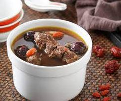

班級:餐三乙 姓名:蔡子毅 學號:91034210
料理陳列展示
藥膳排骨
材料：
- 500 克排骨
- 10 克當歸片
- 10 克黨參
<
- 10 克川芎
- 10 克枸杞子
<
- 3 片陳皮
- 1-2 片薑
- 3 杯清水
- 適量鹽和胡椒調味
製作方法：
- 將排骨洗淨備用。
- 將當歸片、黨參、川芎、枸杞子、陳皮和薑放入湯鍋中。
- 加入清水，將湯鍋放在爐火上，煮沸後加入排骨。
- 調至小火，繼續煮約1-1.5小時，直到排骨熟爛。
- 最後加入適量的鹽和胡椒調味即可。

典故
材料：
藥燉排骨由來編輯 春秋戰國時代，著名的醫學典籍
「黃帝陰經」對壯陽補陰作了較有系統的闡述。
「黃地陰經」中指出：「毒藥攻邪，五谷為養、五果為助、五畜為益、五菜為充，
氣味合而服之，以補『精』益氣。」 討論了藥膳對男體的益處。